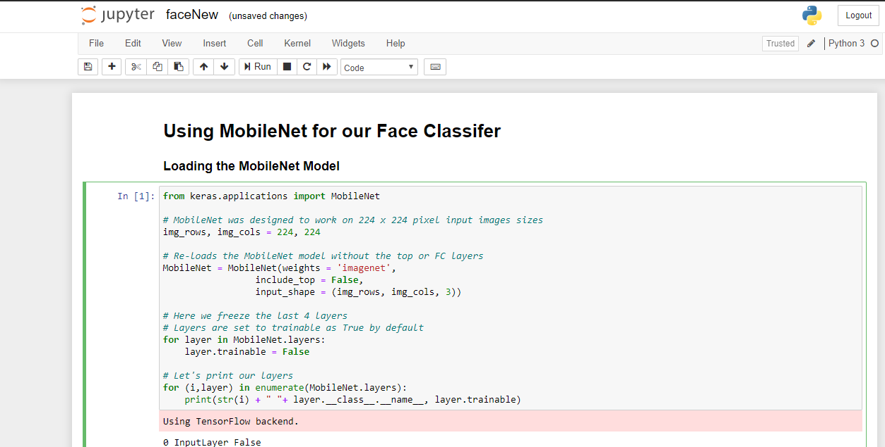
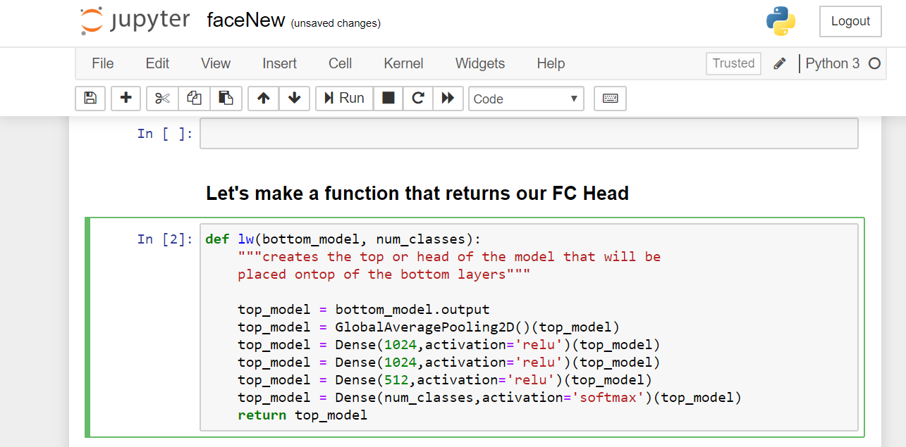
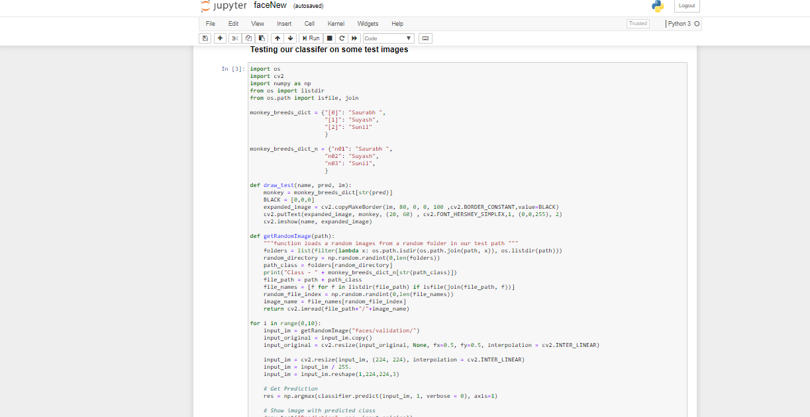

We are using MobileNet pre architectured
Every ML or DL model go through a specific step by step process , so the following are the steps I am using to train Model by my faces dataset
If you are already a part of MLOps training under Vimal Daga Sir then you will catch the flow. ;)
Go through the steps
Importing Mobilenet without the output layer

include_top=False
this removes the output layer and includes all other layers
for layer in MobileNet.layers:
layer.trainable = False
this for loop freezes all the layers
The following function is used for creating additional layers which will be attached to Mobilenet

Notice the last layer softmax, that will be our Output layer
The testing is just simple
correct answer is printed on console whereas prediction is printed on image shown
the code is pretty long so dont go for image look for code file i have uploaded on this repo
